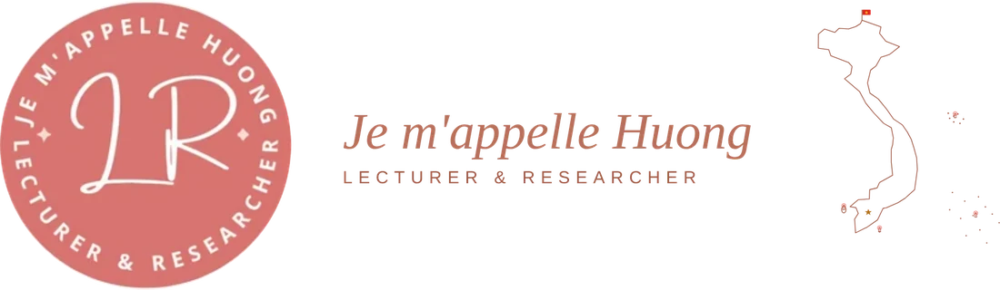
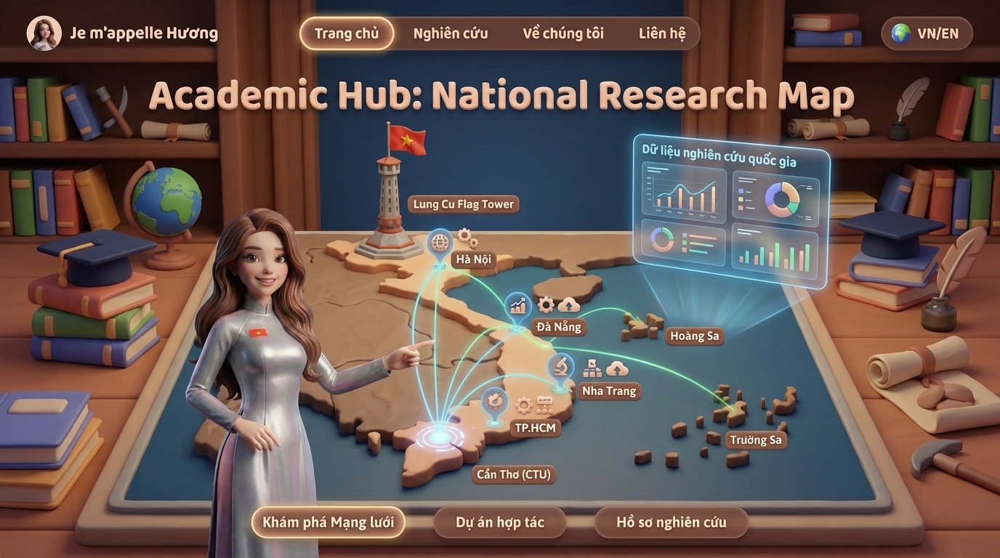

Tôi là giảng viên và nghiên cứu sinh tiến sĩ ngành Quản trị kinh doanh, nghiên cứu về quốc tế hóa và hiệu quả hoạt động kinh doanh của doanh nghiệp ở châu Á. Công việc của tôi kết hợp kinh tế lượng doanh nghiệp (dữ liệu WBES, 50 nền kinh tế), phân tích tổng hợp, và phát triển công cụ AI hỗ trợ nghiên cứu có kiểm chứng con người.I am a lecturer and PhD candidate in Business Administration, researching the internationalization–firm performance relationship in Asia. My work combines firm-level econometrics (WBES data, 50 economies), meta-analysis, and the development of human-verified AI research tools.
“Non sông Việt Nam có trở nên tươi đẹp hay không, dân tộc Việt Nam có bước tới đài vinh quang để sánh vai với các cường quốc năm châu hay không, chính là nhờ một phần lớn ở công học tập của các em.” “Whether the land of Vietnam becomes beautiful, whether the Vietnamese people can step onto the podium of glory to stand shoulder to shoulder with the great powers of the five continents, depends in large part on your studies.”
Kính nhớ Chủ tịch Hồ Chí Minh vĩ đại, lời dạy ấy là ý chí dẫn đường cho hành trình nghiên cứu về quốc tế hóa và vị thế doanh nghiệp Việt Nam sánh vai cùng thế giới.In memory of the great President Ho Chi Minh, those words are the will that guides this research on internationalization and Vietnamese firms standing alongside the world.
Trang cá nhân này là cổng trung tâm kết nối các dự án số phục vụ nghiên cứu và giảng dạy của tôi: phần mềm luận án, trò chơi mô phỏng kinh doanh, ứng dụng ôn tập và cổng trò chơi lịch sử Việt Nam.This homepage is the central hub linking my digital projects for research and teaching: dissertation software, a business-simulation game, a revision app and a Vietnamese-history game portal.
Quốc tế hóa và hiệu quả hoạt động kinh doanh của các doanh nghiệp ở châu Á — Đại học Cần Thơ, hướng dẫn: PGS.TS. Phan Anh Tú. Dữ liệu WBES 50 nền kinh tế, phân tích tổng hợp 236 nghiên cứu, và hệ sinh thái phần mềm (bao gồm M-AIDA). Trang chuyên đề đầy đủ sẽ ra mắt tại đây khi luận án được công bố.Internationalization and firm business performance in Asia — Can Tho University, supervised by Assoc. Prof. Dr. Phan Anh Tu. WBES data across 50 economies, a 236-study meta-analysis, and a software ecosystem (including M-AIDA). The full dissertation site will launch here upon publication.
Meta-Analysis Intelligent Data Assistant — phần mềm trích xuất mức độ ảnh hưởng từ PDF bằng mô hình ngôn ngữ lớn, kiểm chứng con người 100%, khóa bất biến; mã nguồn mở, DOI Zenodo.Meta-Analysis Intelligent Data Assistant — LLM-assisted effect-size extraction from PDFs with 100% human verification and immutable locking; open-source with a Zenodo DOI.
Xem M-AIDA →View M-AIDA →Trò chơi mô phỏng kinh doanh cho giáo dục đại học: 5 đội trên một "thị trường sống" đa tác tử AI, lõi tài chính tất định; kèm bản mở rộng BizOn GO GlObal về khởi nghiệp quốc tế.A business-simulation game for higher education: five teams on one multi-agent AI "living market" with a deterministic finance core; ships with the BizOn GO GlObal international-entrepreneurship expansion.
Chơi BizOn →Play BizOn →Ứng dụng ôn tập học phần Khởi nghiệp: 300 câu trắc nghiệm theo 5 chương, thi thử có đếm giờ, luyện theo chương, lưu câu sai; song ngữ Việt–Anh, cài như ứng dụng (PWA), chạy offline.A revision app for the Entrepreneurship course: 300 multiple-choice questions across 5 chapters, timed mock exams, per-chapter practice, missed-question tracking; bilingual, installable (PWA), works offline.
Mở EnQuiz →Open EnQuiz →Cổng Trò Chơi Sử Việt: Vân Đồn (1149) — xây dựng thương cảng quốc tế đầu tiên của Đại Việt, và Bắc Hải Đảo (1780) — phiêu lưu, giao thương, hải chiến trên vịnh Bắc Bộ. HTML5 thuần, chơi ngay trên trình duyệt.A Vietnamese-history game portal: Vân Đồn (1149) — build Đại Việt's first international trading port, and Bắc Hải Đảo (1780) — adventure, trade and naval combat in the Gulf of Tonkin. Pure HTML5, playable in the browser.
Vào cổng trò chơi →Enter the portal →Nhân vật ảo 3D trong tà áo dài trắng — gương mặt đại diện xuyên suốt hệ sinh thái số: dẫn tour bằng giọng nói trong EnQuiz, đồng hành trong M-AIDA và BizOn.A 3D virtual character in a white áo dài — the face of the whole digital ecosystem: voice-guided tours in EnQuiz, a companion across M-AIDA and BizOn.
Xem đầy đủ danh mục công trình đã công bố trên ORCID. Các nghiên cứu trong khuôn khổ luận án đang phản biện sẽ được cập nhật khi được chấp nhận.See the full list of published works on ORCID. Dissertation studies under review will be added once accepted.
Phần mềm trích xuất mức độ ảnh hưởng từ PDF bằng mô hình ngôn ngữ lớn, có kiểm chứng con người 100% và khóa bất biến. Xây dựng cho luận án; mã nguồn mở, lưu trữ Zenodo.Software that extracts effect sizes from PDFs with large language models, with 100% human verification and immutable locking. Built for the dissertation; open-source, archived on Zenodo.
Xem M-AIDA →View M-AIDA →Trò chơi mô phỏng tình huống kinh doanh cho giáo dục đại học: 5 đội cạnh tranh trên MỘT "thị trường sống" do các tác tử khách hàng AI (5 phân khúc) mô phỏng; lõi tài chính tất định & báo cáo phân tích. Dùng cho học phần Mô phỏng tình huống trong kinh doanh (EC1314).A business-simulation game for higher education: five teams compete on one "living market" simulated by AI customer-segment agents, with a deterministic finance core and an analytics report. Used in the Business Simulation course (EC1314).
Chơi thử BizOn AI →Play BizOn AI →Giảng viên các học phần kinh tế lượng, phương pháp nghiên cứu, phân tích hoạt động kinh doanh, kinh doanh quốc tế, thương mại điện tử, mô phỏng tình huống kinh doanh, khởi nghiệp & khởi sự doanh nghiệp.Lecturer in econometrics, research methods, business performance analysis, international business, e-commerce, business simulation, and entrepreneurship & new venture creation.
Mỗi học phần được kết nối với các công trình nghiên cứu liên quan của tôi.Each course is linked to my related research works.
Tham gia phản biện bản thảo cho tạp chí khoa học.Serving as a manuscript reviewer for academic journals.

Số liệu trực tiếp từ World Bank Open Data, các chỉ số phát triển tài chính, kinh tế và môi trường của những nền kinh tế xuất hiện trong luận án. Chọn chỉ số và quốc gia để so sánh.Live figures from World Bank Open Data, financial-development, economic and environmental indicators for the economies studied in the dissertation. Pick an indicator and countries to compare.